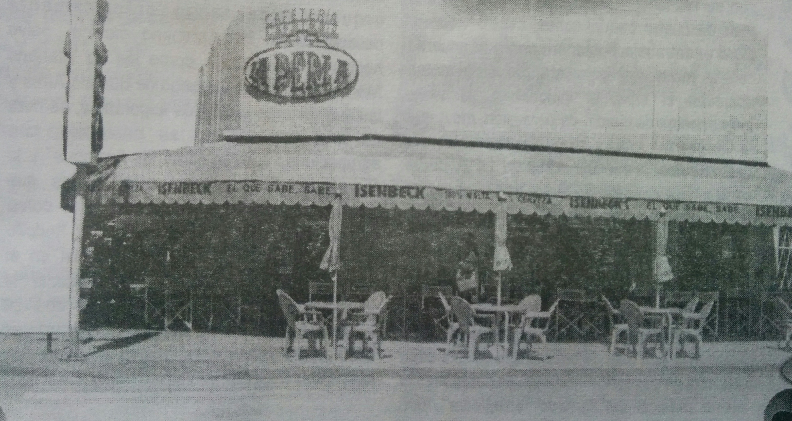

La Perla
Nuestra Historia al pasar de los años

La antigua y muy tradicional esquina de la calle 9 de julio y la avenida Villarino, en pleno corazón céntrico, de la geografía urbana de Chivilcoy, donde hoy se levanta, la típica e inconfundible cafetería “La Perla”, propiedad del señor Italo Mucci; constituye, sin dudas, todo un solar histórico, y un verdadero símbolo o emblema, dentro de las páginas evocativas del ayer, y en las raíces, la vida y el espíritu localista, de nuestra ciudad. En ese mismo sitio, de hondos y claros recuerdos fundacionales, breve tiempo después, del nacimiento de Chivilcoy, aquel memorable domingo 22 de octubre de 1854; se construyó un humilde rancho, que convertido en una modesta capilla, brindó el ámbito adecuado, para la celebración de los primeros oficios litúrgicos lugareños, encendiéndose así, la luminosa llama del cristianismo, la fe y la religiosidad. Años más tarde – fines del siglo XIX y principios del XX -, se instaló en el lugar, un café, de la firma Giner e Isasmendi; el cual, convocaba, diariamente, al alegre vecindario chivilcoyano, de la época, y en la década de 1910, hubo de funcionar, en ese sitio, una tienda, de Don José Lago, bautizada con el nombre de “La Universal”. Con posterioridad, desfilaron distintos dueños, hasta llegar a los últimos años de la década de 1930, cuando adquirió la confitería, Don Humberto Ferrari, quien habilitó un “bar anexo”, sumando al espacio, algunos billares, para el esparcimiento y la distracción de los habituales concurrentes. En la década de 1950, administrada por los hermanos Cadavid, hubo de llamarse “La Macarena”, y luego, de varios años de actividad, volvió al ya clásico nombre de “La Perla”. A lo largo de un fiel y sostenido itinerario cronológico, la popular confitería, ha ofrecido a su clientela, numerosos y calificados espectáculos musicales, de una particular jerarquía artística, y por ella transitaron, diferentes intérpretes y orquestas, de apreciable nivel local y alto rango nacional. En el mes de mayo de 2003, por una oportuna y feliz iniciativa, del cantante chivilcoyano, Jorge Destaville, el Honorable Concejo Deliberante, a través de una ordenanza, hubo de bautizar a la entrañable confitería, como “La Esquina de Tango”.
A la cafetería “La Perla”, por Carlos Armando Costanzo, fundador y director organizador del Archivo Literario Municipal y del Salón del Periodismo Chivilcoyano, y miembro académico correspondiente de la Academia Porteña del Lunfardo.
Gran esquina de Tango, vieja esquina, del encuentro sincero y afectuoso, donde brota el sentir más amistoso, y entre cantos, la noche se ilumina. Clara imagen de vida pueblerina, con sus mesas – la charla y el reposo -; algún aire dulzón y melodioso, y la voz de una música genuina. Rincón para el ensueño ciudadano, la nostalgia, el ayer chivilcoyano, la emoción y la cálida memoria… Gran esquina y feliz cafetería, que a la gente se brinda, cada día, y es presencia tanguera, en nuestra historia. Antigua y singular cafetería, del encuentro y la charla placentera, el romántico amor de primavera, el café, la amistad, la compañía… Yo le canto a su clima de armonía, sus recuerdos, su dicha verdadera, su espacio familiar y su vidriera, que a través de los años, sonreía… Firme bastión, de larga trayectoria, esquina del ayer – hermosa historia -, y singular estampa ciudadana… “La Perla” – yo la nombro, tiernamente -, como símbolo vivo y permanente, de la fiel tradición chivilcoyana.